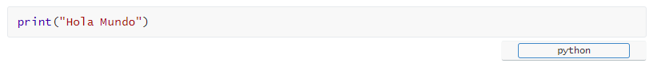

Tutorial Markdown
Tutorial MarkdownIntroducciónElementos de bloquePárrafos y saltos de líneaPárrafosSaltos de líneaEncabezadoCitasCódigoVisualizaciónCitas anidadasCódigoVisualizaciónListasListas desordenadasCódigoVisualizaciónListas anidadasCódigoVisualizaciónListas ordenadasCódigoVisualizaciónListas de tareasCódigoVisualizaciónCódigoBloquesCódigoVisualizaciónLíneasCódigoVisualizaciónPorcionesLíneas horizontalesCódigoVisualizaciónElementos de líneaÉnfasisItálicaNegritaItálica y negritaTachadoEnlacesEnlaces en líneaCódigoVisualizaciónEnlaces como referenciaCódigoVisualizaciónEnlaces automáticosCódigoVisualizaciónImágenesCódigoVisualizaciónMultimarkdownTablasCódigoVisualizaciónNotas al pie de páginaCódigoVisualizaciónReferencias cruzadasCódigoVisualizaciónOmitir MarkdownTyporaExportar archivos de MarkdownTabla de contenidosArchivosBloques de ecuacionesCódigoVisualizaciónAlternar vistasGeneración de párrafos y saltos de líneaGeneración de bloques de códigoGeneración de tablasMarcar tarea como completadaInsertar elementos con click derechoAnidar listas y citasAplicar énfasis a un texto escritoPares de símbolos automáticosElegir imagen desde el explorador de archivosGráficos y diagramasBibliografía
Introducción
Markdown es un lenguaje que permite escribir documentos de texto de manera sencilla e interactiva a través del teclado, sin necesidad de recurrir a ningún comando o herramienta en las distintas solapas del menú del programa con el que se lo utilice. El lenguaje no solo fue creado para ser sencillo de escribir, sino también para ser práctico de leer.
Existen distintos softwares que permiten utilizar el lenguaje. Este documento se centrará en las distintas herramientas de sintaxis de Markdown propiamente dicho y se mostrarán algunos aspectos de uno de los cientos de intérpretes del lenguaje, llamado Typora, el cual resulta bastante sencillo de usar y presenta una serie de herramientas muy útiles e interesantes.
Hoy en día, Markdown está presente en un alto número de lenguajes de programación, así como también en algunas plataformas y frameworks. Principalmente, se utiliza para escribir texto y luego transformarlo al formato HTML, exportando el archivo como tal. Esto resulta muy útil en el mundo de la documentación web, ya que permite generar el mismo contenido con menos caracteres y, por lo tanto, en menos tiempo. Markdown incluso permite escribir archivos en formato HTML si se lo desea. Gracias a las herramientas que trae la mayoría de editores, también se pueden exportar documentos en formato PDF, Word, RTF y varios otros.
Por todas las prestaciones del lenguaje previamente mencionadas, Markdown es muy recurrido en el mundo de la Web, particularmente en el desarrollo y publicación de blogs y artículos de todo tipo. No obstante, el espectro de posibilidades que ofrecen los editores de Markdown actuales hacen del lenguaje una herramienta fundamental para documentar cualquier proceso o proyecto de manera ágil y sencilla.
Elementos de bloque
Párrafos y saltos de línea
Párrafos
Para separar párrafos simplemente se debe omitir una línea, pulsando dos veces la tecla de Enter . Si se dejan dos o más líneas en blanco, al procesarse el documento se convertirán en una sola.
Saltos de línea
Para realizar un salto de línea dentro de un mismo párrafo se debe pulsar 2 veces la barra espaciadora y luego pulsar Enter.
Encabezado
Para crear un encabezado se debe escribir una cierta cantidad de # (numeral/es) al comienzo de la línea, un espacio y el texto que se desea introducir.
Markdown posee hasta seis niveles de encabezados, que varían en su tamaño y formato. A continuación se encuentra una lista con la forma de introducir cada uno de los distintos niveles de encabezados que Markdown admite:
| Nivel | Simbolización |
|---|---|
| 1 | # (texto) |
| 2 | ## (texto) |
| 3 | ### (texto) |
| 4 | #### (texto) |
| 5 | ##### (texto) |
| 6 | ###### (texto) |
A continuación se encuentra un ejemplo de cada uno de los distintos estilos de encabezado, desde el nivel 1, el cual posee el mayor tamaño y funciona como título principal, hasta el 6, del menor tamaño y útil para dividir un tema por secciones:

Citas
Una cita se realiza cuando queremos incluir palabras textuales de otro autor en nuestro documento. Sin embargo, cabe destacar que esta herramienta es muy útil para realizar avisos, aclaraciones, apartados o cualquier otra cosa que uno quiera separar del texto principal de manera vistosa y llamativa.
Las citas se generan utilizando el carácter > (mayor que) al comienzo de la línea, seguido de un espacio y el texto de la misma.
Si una cita está compuesta por más de un párrafo se debe introducir el símbolo al comienzo de cada párrafo, es decir, en la primer línea de los mismos, así como en cada una de las líneas que se dejan en blanco entre párrafos.
ACLARACIÓN
Por defecto, al presionar la tecla Enter una vez generada una cita, Markdown automáticamente genera otra línea dentro de la misma. Para salir de la cita y continuar escribiendo en un nuevo párrafo se debe presionar la tecla Enter una vez más.
A continuación se encuentra un ejemplo de una cita:
Código
> Esto es una cita> Esta es la segunda línea de la cita>> Este es otro párrafo de la citaVisualización
Esto es una cita Esta es la segunda línea de la cita
Este es otro párrafo de la cita
Citas anidadas
Para anidar citas, es decir, introducir citas dentro de citas, simplemente se debe ingresar un signo de > (mayor que) adicional al comienzo de la línea en la que se desea introducir una cita anidada. El siguiente es un ejemplo de citas anidadas:
Código
xxxxxxxxxx> Esto es una cita>> Esta cita está anidadaVisualización
Esto es una cita
Esta cita está anidada
Listas
Listas desordenadas
Para crear una lista desordenada, es decir, una lista de elementos que no llevan ningún orden en particular es tan simple como introducir un - (guion medio) al comienzo de cada ítem, seguido de un espacio y el texto a visualizar. Alternativamente se acepta un * (asterisco) o un + (signo más). Los tres signos se pueden alternar dentro de una misma lista sin alterar el resultado en pantalla.
A continuación se presenta un ejemplo de listas desordenadas:
Código
xxxxxxxxxx- Ítem 1+ Ítem 2* Ítem 3- Ítem 4- Ítem 5Visualización
- Ítem 1
- Ítem 2
- Ítem 3
- Ítem 4
- Ítem 5
ACLARACIÓN
Por defecto, al presionar la tecla Enter una vez generada una lista, Markdown automáticamente genera otro ítem. Para salir de la lista y continuar escribiendo en un nuevo párrafo se debe presionar la tecla Enteruna vez más.
Listas anidadas
Al igual que con las citas, se pueden generar listas anidadas dentro de otras listas simplemente añadiendo 2 espacios en blanco o presionando la tecla Tab antes de colocar el - (guion medio), * (asterisco) o + (signo más). Para salir de la lista anidada y seguir listando ítems basta con presionar 2 veces la tecla Enter luego de haber saltado a la próxima línea de la lista actual.
Se pueden generar cuantos niveles de listas anidadas se quiera, no existen restricciones en ese aspecto (siempre y cuando no se supere el largo del renglón.
A continuación se encuentra un ejemplo de listas anidadas:
Código
xxxxxxxxxx- Ítem - Ítem anidado- Ítem 2 - Ítem 2 anidado - Ítem anidado al anidadoVisualización
Ítem
- Ítem anidado
Ítem 2
Ítem 2 anidado
- Ítem anidado al anidado
Listas ordenadas
Para generar una lista ordenada se debe seguir el formato "Número.", es decir, un número seguido de un punto.
Al igual que las listas desordenadas, se pueden crear listas anidadas.
Además, se pueden combinar ambos tipos de lista sin problema. En otras palabras, se pueden anidar listas ordenadas con listas desordenadas y viceversa.
ACLARACIÓN
Por defecto, al presionar la tecla Enter una vez generada una lista, Markdown automáticamente genera otro ítem, siguiendo un orden de números naturales consecutivo ascendente. Para salir de la lista y continuar escribiendo en un nuevo párrafo se debe presionar la tecla Enter una vez más.
A continuación se encuentra un ejemplo de listas ordenadas y desordenadas combinadas:
Código
xxxxxxxxxx- Lista 1 1. Elemento 1 2. Elemento 2 - Elemento 2.1 - Elemento 2.2Visualización
Lista 1
Elemento 1
Elemento 2
- Elemento 2.1
- Elemento 2.2
Listas de tareas
Para generar una lista de tareas se debe colocar un - (guion medio), seguido de un espacio y un [ ] (par de corchetes). Es importante aclarar que el par de corchetes debe contener un espacio en medio, de otra manera será interpretado como un par de corchetes textualmente. Sintácticamente es como generar una lista desordenada y agregarle el par de corchetes.
Para marcar una tarea que ya ha sido realizada o completada, se debe remover el espacio en medio de los corchetes y reemplazarlo por una x (equis minúscula).
Las listas de tareas se pueden anidar con el resto de listas sin problema.
ACLARACIÓN
Por defecto, al presionar la tecla Enter una vez generada una lista, Markdown automáticamente genera otro ítem. Para salir de la lista y continuar escribiendo en un nuevo párrafo se debe presionar la tecla Enter una vez más.
A continuación se encuentra un ejemplo de listas de tareas:
Código
xxxxxxxxxx- Tarea 1- Tarea 2- [x] Tarea 3Visualización
Tarea 1
Tarea 2
Tarea 3
Código
Bloques
Para introducir un bloque de código se deben ingresar tres ~ (virgulillas, o coloquialmente "tildes de la eñe") al comienzo de una línea y luego se debe copiar en la línea siguiente a la que finaliza el código que se quiere mostrar.
Si se desea, se puede agregar el lenguaje de programación del cual se mostrará código a continuación (y sin espacios) del primer trío de virgulillas. De esta manera, el editor puede aplicar ciertas particularidades de su formato, por ejemplo, la diferenciación de colores entre objetos.
A continuación se encuentra un ejemplo de bloque de código:
Código
~~~python
a = "Hola mundo"
print(a)
~~~
Visualización
xxxxxxxxxxa = "Hola mundo"print(a)Líneas
Existe un método para generar una línea de código, ingresando cuatro espacios al comienzo, pero se deben escribir los mismos al comienzo de cada línea. Por ello, este método no se suele utilizar, con salvedad de algunas situaciones en que sólo se quiere escribir una línea de código.
A continuación se encuentra un ejemplo de lo explicado:
Código
xxxxxxxxxx Esto es una línea de códigoEsto no lo es Esto también lo esVisualización
xxxxxxxxxxEsto es una línea de código
Esto no lo es
xxxxxxxxxxEsto también lo es
Porciones
También se pueden introducir pequeñas instrucciones o porciones de código en medio de un párrafo o una línea, encerrando dicho código entre dos `` (tildes reversos). Es importante aclarar que en este caso no se puede escoger el lenguaje, por lo que no se produce una diferenciación de formatos, si no una simple variación en la fuente del texto.
A continuación se encuentra una demostración:
| Código | Visualización |
|---|---|
| `print("Hola Mundo")` | print("Hola Mundo") |
| Imprimir en pantalla `print("Hola Mundo")` | Imprimir en pantalla print("Hola Mundo") |
| Se utiliza la instrucción `print()` para imprimir por pantalla una cadena de caracteres | Se utiliza la instrucción print() para imprimir por pantalla una cadena de caracteres |
Líneas horizontales
Se crean escribiendo *** (tres asteriscos), --- ( tres guiones medios) o ___ (tres guiones bajos) al comienzo de la línea y se utilizan normalmente para separar secciones de una manera visual.
A continuación se encuentra un ejemplo de línea horizontal:
Código
xxxxxxxxxxLínea horizontal---Visualización
Línea horizontal
Elementos de línea
Énfasis
Itálica
Para darle formato de itálica a una letra, una palabra, una frase o incluso un párrafo entero si se lo desea, se debe encerrar el texto a remarcar entre * * (asteriscos). Alternativamente, se acepta _ _ (guiones bajos). Dentro de un mismo texto se pueden remarcar tantas palabras, frases u oraciones como se quiera, simplemente encerrando entre los signos previamente mencionados las partes a remarcar.
A continuación se encuentran algunos ejemplos de texto escrito en itálica:
| Código | Visualización |
|---|---|
| *F*útbol / _F_útbol | Fútbol |
| *Fútbol* / _Fútbol_ | Fútbol |
| *Me gusta el fútbol* / _Me gusta el fútbol_ | Me gusta el fútbol |
| Me gusta *el fútbol* / Me gusta _el fútbol_ | Me gusta el fútbol |
| Me *gusta* el *fútbol* / Me _gusta_ el _fútbol_ | Me gusta el fútbol |
Negrita
Para darle formato de negrita a una letra, una palabra, una frase o incluso un párrafo entero si se lo desea, se debe encerrar el texto a remarcar entre ** ** (pares de asteriscos). Alternativamente, se aceptan __ __ (pares de guiones bajos). Dentro de un mismo texto se pueden remarcar tantas palabras, frases u oraciones se quiera, simplemente encerrando entre los signos previamente mencionados las partes a remarcar.
A continuación se encuentran algunos ejemplos de texto escrito en negrita:
| Código | Visualización |
|---|---|
| **F**útbol / __F__útbol | Fútbol |
| **Fútbol** / __Fútbol__ | Fútbol |
| **Me gusta el fútbol** / __Me gusta el fútbol__ | Me gusta el fútbol |
| Me gusta **el fútbol** / Me gusta __el fútbol__ | Me gusta el fútbol |
| Me **gusta** el **fútbol** / Me __gusta__ el __fútbol__ | Me gusta el fútbol |
Itálica y negrita
Para combinar la itálica y la negrita se debe encerrar el texto entre *** *** (tríos de asteriscos). Alternativamente, se aceptan ___ ___ (tríos de guiones bajos).
A continuación se encuentran algunos ejemplos de texto escrito en itálica y negrita combinadas:
| Código | Visualización |
|---|---|
| ***F***útbol / ___F___útbol | Fútbol |
| ***Fútbol*** / ___Fútbol___ | Fútbol |
| ***Me gusta el fútbol*** / ___Me gusta el fútbol___ | Me gusta el fútbol |
| Me gusta ***el fútbol*** / Me gusta ___el fútbol___ | Me gusta el fútbol |
| Me ***gusta*** el ***fútbol*** / Me ___gusta___ el ___fútbol___ | Me gusta el fútbol |
Tachado
Para darle formato de tachado a una letra, una palabra, una frase o incluso un párrafo entero si se lo desea, se debe encerrar el texto a remarcar entre ~~ ~~ (pares de virgulillas). Dentro de un mismo texto se pueden remarcar tantas palabras, frases u oraciones se quiera, simplemente encerrando entre los signos previamente mencionados las partes a remarcar.
A continuación se encuentran algunos ejemplos de texto tachado:
| Código | Visualización |
|---|---|
| F~~ú~~tbol | F |
| ~~Fútbol~~ | |
| ~~Me gusta el fútbol~~ | |
| Me gusta ~~el fútbol~~ | Me gusta |
| Me ~~gusta~~ el ~~fútbol~~ | Me |
Enlaces
Enlaces en línea
Los enlaces en línea son aquellos que se encuentran vinculados a una palabra, una frase o una oración, y que haciendo click llevan a un sitio web. Para generar un enlace de este tipo se debe encerrar el texto entre [] (corchetes) y a continuación (y sin espacios) la URL entre (), paréntesis.
A continuación se encuentra un ejemplo de enlace en línea:
Código
xxxxxxxxxxEste [link](https://google.com) dirige a la página principal de Google.Visualización
Este link dirige a la página principal de Google.
Enlaces como referencia
Estos enlaces funcionan como los anteriores, pero con la diferencia que en lugar de ingresar el link o URL del sitio al que se desea vincular el texto, se ingresa una referencia entre [] (corchetes) a continuación (y sin espacios) del par de corchetes que contiene al texto vinculado. Una vez exportado el documento, las referencias se vuelven invisibles, es decir que solo el autor puede observarlas en el código.
Estas referencias se deben definir en algún lugar del documento, lo normal es dejar una sección aparte para referencias o al final de la sección correspondiente. Para definir una referencia se debe encerrar un texto entre [] (corchetes) y a continuación (y sin espacios) colocar : (dos puntos), un espacio y la URL correspondiente.
Opcionalmente, se puede agregar un título a cada referencia, que sólo se visualiza en la definición de la misma y sirve como ayuda visual. Esto se hace ingresando un espacio a continuación de la URL y el título entre "" (comillas).
A continuación se encuentra un ejemplo de enlaces como referencia:
Código
xEste [link][google] dirige a la página principal de Google, mientras que [este][bio] dirige a la página de Wikipedia que habla sobre el mismo.[google]: https://google.com[bio]: https://es.wikipedia.org/wiki/Google "Biografía de Google"Visualización
Este link dirige a la página principal de Google, mientras que este dirige a la página de Wikipedia que habla sobre el mismo.
Enlaces automáticos
Estos enlaces se utilizan cuando lo que se quiere mostrar es directamente la dirección del sitio web. Para generarlos, lo único que se debe hacer es encerrar la URL entre los símbolos < > (menor que y mayor que).
A continuación se encuentra un ejemplo de enlace automático:
Código
xxxxxxxxxxPuedes ver los videos que desees en <https://www.youtube.com/>, una plataforma de multimedia de primer nivel.Visualización
Puedes ver los videos que desees en https://www.youtube.com/, una plataforma de multimedia de primer nivel.
Imágenes
Insertar una imagen en Markdown es muy similar a crear un enlace, con la diferencia que se debe ingresar un ! (signo de exclamación de cierre) al comienzo. En este caso, el [] (par de corchetes) encierra un texto alternativo que se utiliza como modo de identificación de lo que representa la imagen si la carga de esta fallara por alguna razón. Como lo dice su nombre es opcional, es decir que puede estar vacío, pero los corchetes deben incluirse sí o sí. Finalmente, entre (), paréntesis, se debe colocar el nombre con el que está grabada la imagen (incluyendo la extensión del archivo) si es que se encuentra en la misma carpeta que el archivo de Markdown que se está editando, o la ubicación completa de la imagen si no lo está.
Opcionalmente, se puede incluir un título alternativo que aparece al dejar el puntero del ratón sobre la imagen, y se ingresa entre "" (comillas), con un espacio previo a su ingreso, a continuación del nombre o ubicación de la imagen, dentro del paréntesis.
También, de la misma manera que con los enlaces, se pueden crear referencias a imágenes en otro lugar del documento para utilizarlas en lugar del nombre o ubicación de la imagen, ingresando la URL de la misma en lugar de su nombre o ubicación. Estas referencias también se tornan invisibles para el lector.
A continuación se encuentra una serie de ejemplos de inserción de imágenes:
Código
xxxxxxxxxx*Este es el logo de Markdown*![Logo Typora][logo_ty]*Este es el logo de Typora*[logo_ty]: https://d33wubrfki0l68.cloudfront.net/afe968cf5a0924ca11a2d20fda0694743bf2d13b/80364/assets/images/tool-icons/typora.pngVisualización
 Este es el logo de Markdown
Este es el logo de Markdown
 Este es el logo de Typora
Este es el logo de Typora
Multimarkdown
Multimarkdown, nació de la necesidad de escribir documentos académicos utilizando Markdown. Así que este lenguaje no solo incluye todas las herramientas mencionadas anteriormente, sino que añade la capacidad de escribir notas al pie de página, tablas, y otras más.
A pesar que no todos los editores incluyen las herramientas de Multimarkdown, Typora es uno de los que sí lo hacen, pero no en su totalidad. Por ello, a continuación se detallarán sólo aquellas herramientas de Multimarkdown que están contempladas en Typora: las tablas, las notas al pie de página y las referencias cruzadas.
Tablas
Para crear una tabla primero se deben definir sus encabezados y luego se deben generar el resto de filas.
Para definir los encabezados, lo que se debe hacer es escribir cada uno separado por | (barras verticales). El ancho de cada columna se define según cantidad de caracteres que haya en la fila más larga de cada columna. Para especificar que esta línea corresponde a los encabezados de la tabla, se debe crear una línea debajo con la misma cantidad de secciones separadas por | (barras verticales), pero con -- (dos guiones medios) en cada una de estas.
Una vez definidos los encabezados, se pueden comenzar a crear las siguientes filas de la tabla con la misma sintaxis que se utilizó para generar los encabezados. Markdown logra diferenciarlas gracias a la segunda línea compuesta por guiones medios, por lo que es muy importante que esta no se omita.
Se pueden agregar columnas cuando se lo desee, pero para ello se debe agregar el encabezado correspondiente y modificar cada una de las filas, por lo que se recomienda definir con exactitud la cantidad de columnas a la hora de crear la lista.
A continuación se encuentra un ejemplo de tabla:
Código
xxxxxxxxxx| Primera columna | Segunda columna | Tercera columna || -- | -- | -- || Contenido 1-1 | Contenido 1-2 | Contenido 1-3 || Contenido 2-1 | Contenido 2-2 | Contenido 2-3 || Contenido 3-1 | Contenido 3-2 | Contenido 3-3 |Visualización
| Primera columna | Segunda columna | Tercera columna |
|---|---|---|
| Contenido 1-1 | Contenido 1-2 | Contenido 1-3 |
| Contenido 2-1 | Contenido 2-2 | Contenido 2-3 |
| Contenido 3-1 | Contenido 3-2 | Contenido 3-3 |
Notas al pie de página
Las notas al pie de página suelen ser muy útiles en documentos o blogs, ya que se utilizan para dar definiciones de ciertas palabras o conceptos al final del documento, a modo de no incluirlas en el texto principal para que no resulte muy engorroso o pesado de leer.
Para crear una nota al pie de página se debe escribir el texto o número que se utiliza como referencia entre [] (corchetes) con un ^ (tilde circunflejo) al comienzo del texto dentro de los corchetes.
Para definir la nota al pie de página se debe escribir el mismo texto encerrado entre [] (corchetes), con un ^ (tilde circunflejo) al comienzo, en alguna parte del documento, seguido de : (dos puntos), un espacio y el texto que corresponde a la definición o aclaración del concepto que se desea referenciar.
Al colocar el puntero del ratón sobre la nota, se puede observar la referencia y al clickear en ella nos lleva automáticamente a la parte del documento donde se encuentra la referencia y viceversa.
A continuación se encuentra un ejemplo de notas al pie de página:
Código
xxxxxxxxxxAprender a utilizar *Markdown* resulta muy hacedero[^1] para cualquier persona.[^1]: Que puede ser hecho o es fácil de hacerVisualización

Referencias cruzadas
Este apartado se refiere a aquellos enlaces que permiten vincular una sección dentro del propio documento, a través de referencias a sus encabezados.
Para crear el enlace, se sigue el mismo formato que con el enlace en línea, con la diferencia que el texto entre (), paréntesis, debe ser la referencia, es decir, el texto literal del encabezado al que se desea vincular, incluyendo un # (numeral) al comienzo dentro de los paréntesis.
A continuación se encuentra un ejemplo de enlaces internos:
Código
xxxxxxxxxx## Encabezado1Este es un enlace al [encabezado](#Encabezado1).Visualización

Omitir Markdown
Una pregunta que ya te habrás hecho es cómo hago para escribir los símbolos de la sintaxis de Markdown sin que sean tomados como tales, sin contar por supuesto los bloques de código, que omiten estas particularidades. Para que Markdown ignore un signo de su sintaxis lo que se debe hacer es ingresar una \ (contrabarra o barra invertido) delante. Si se desea omitir la propia contrabarra, se debe ingresar otra delante de la misma.
A continuación se muestran algunos ejemplos:
| Código | Visualización |
|---|---|
| \*Fútbol* debería estar en cursiva | *Fútbol* debería estar en cursiva |
| \- Este debería ser un ítem de lista, omite la lista | - Este debería ser un ítem de lista |
| \## Este debería ser un encabezado de segundo nivel | ## Este debería ser un encabezado de segundo nivel |
Typora
Typora es uno de los editores de Markdown más utilizados, ya que genera una simpleza y una docilidad a la hora de escribir mayor a la del propio lenguaje, a través de una serie de herramientas y atajos. Además, es totalmente gratuito.
A continuación se detallarán varias de estas herramientas y funcionalidades, aunque solo me concentraré en aquellas que considero más útiles y de uso frecuente, por lo que deberás investigar en su sitio web oficial si te interesa obtener más información acerca de los usos del programa.
Exportar archivos de Markdown
Al igual que la mayoría de los editores de Markdown, Typora permite exportar archivos de formato .md (extensión de los archivos de Markdown) como archivos de otros formatos, entre ellos HTML, PDF y Word. Para ello se deben realizar los siguientes pasos:
- Ingresar al menú de Exportar en la solapa de Archivo (F) que se encuentra en la parte superior derecha de la ventana del programa.
- Seleccionar el formato al que se desee exportar el archivo.
Tabla de contenidos
La tabla de contenidos permite agrupar todos los distintos encabezados que contiene el documento, en una sola sección, que normalmente corresponde al comienzo del mismo. Además, si en el menú de Visualización (ubicado arriba a la derecha del documento) activamos la opción de Índice, esta nos permite observarlo en una barra lateral en todo momento, situada a la izquierda del documento.
Cada uno de los encabezados de la tabla de contenidos posee un enlace que, al darle click, lleva a la sección del documento donde se encuentra el mismo, y todo su contenido. Por lo tanto, te recomiendo incluirlo siempre, ya que resulta muy útil y práctico para el lector y para ti mismo a la hora de editar.
Para generar una tabla de contenidos simplemente deberás escribir el comando [TOC] y pulsar la tecla Enter. El programa va incluyendo los distintos encabezados en ella de manera automática a medida que los escribas, por lo que no deberás preocuparte por incluirlos tú mismo.
ACLARACIÓN
Aunque no se cree la Tabla de Contenidos, Typora igualmente generará un Índice con todos los encabezados del documento, pero este no será visible ni aprovechable por el lector luego de exportar el archivo, ya que solo permanecerá visible en la edición del documento.
Archivos
En la barra lateral previamente mencionada, además podemos visualizar otras cosas como el árbol de Archivos de extensión .md que se encuentran en la ubicación o carpeta donde guardamos el documento con el que estamos trabajando actualmente.
Typora permite tener activas tanto la barra de Índice y Archivos al mismo tiempo, pudiendo alternar entre ellas haciendo click en sus encabezados.
Bloques de ecuaciones
Los bloques de ecuaciones permiten escribir todo tipo de ecuación matemática, incluyendo operaciones o símbolos matemáticos que se introducen a través de ciertos códigos, que siguen el formato "\código", es decir, una \ (contrabarra o barra invertida) seguida de una palabra acorde a la operación o símbolo que se desea introducir. La sintaxis de los bloques de ecuaciones se basa en un lenguaje llamado LaTeX, en el cual no me adentraré, pero dejaré el link a un documento que la detalla por completo para aquellos que les interese.
Para crear un bloque de ecuaciones se deben ingresar $$ (dos signos de dólar) al comienzo de la línea y cerrar con otro par de signos de dólar en la última línea del bloque. De esta manera, el texto que se encuentre entre los dos pares de signos se transformará en una ecuación.
Si se desean escribir varias líneas de ecuaciones se deben ingresar \\ (dos contrabarras o barras invertidas) al final de cada línea, de otra manera todo el código escrito se va a mostrar en la misma línea.
A continuación se encuentra un ejemplo de bloque de ecuaciones:
Código
xxxxxxxxxx$$p(x) = x ^ 2 + 2x + 1\\p(x) = (x + 1) ^ 2$$Visualización
ACLARACIÓN
En la vista normal de Typora basta con ingresar la primer línea de $$ (signos de dólar) para que se genere el bloque de ecuaciones.
Alternar vistas
Typora permite alternar entre la vista del código fuente, es decir el input, y la vista normal donde se observa el resultado, o output. En la primer ventana, se escribe utilizando todos los métodos mencionados en este documento acerca de la sintaxis de Markdown. En cambio, en la segunda podemos utilizar las herramientas y funcionalidades de Typora que nos permiten escribir de manera más dócil y cómoda, así como observar el resultado en pantalla a medida que escribimos el código, ya que el programa lo interpreta en tiempo real.
Para alternar entre estas dos vistas se debe hacer click en el botón que se encuentra abajo a la izquierda, simbolizado como "</>", o bien ir a la solapa de Visualización y seleccionar la opción Modo código fuente.
ACLARACIÓN
Todas las funcionalidades que se detallan a continuación se pueden aprovechar desde la vista normal, y no desde la vista de código fuente.
Generación de párrafos y saltos de línea
En Typora los párrafos se generan de manera automática al presionar la tecla Enter una sola vez. Asimismo, no debemos preocuparnos por dejar dos espacios al final de cada línea para que se produzca un salto de línea, ya que el editor los agrega automáticamente al pasar a la línea siguiente, es decir, cuando el texto de la actual ocupa todo el ancho de la página.
Generación de bloques de código
Typora permite crear bloques de código de una manera más simple y ágil simplemente ingresando el ~~~ (trío de virgulillas) de apertura y presionando la tecla Enter, sin necesidad de cerrar el bloque con otro trío de virgulillas.
Además, para escoger el lenguaje del bloque se puede realizar de dos maneras: la clásica, colocando el nombre del mismo luego del primer "~~~"; o creando el bloque sin seleccionar ninguno y luego escribirlo en un espacio abajo a la derecha del bloque que Typora reserva para la selección del lenguaje. A continuación se muestra el segundo método:
- En esta imagen se muestra el espacio reservado para seleccionar el lenguaje.

- En esta imagen se observa como, al seleccionar el lenguaje, es inmediatamente interpretado y se aplica un formato determinado al contenido del bloque de código.

ACLARACIÓN
Para salir del bloque de código y continuar desarrollando el texto principal del documento se deben presionar las teclas Ctrl + Enter, ya que al presionar solo Enter se crea una nueva línea de código dentro del bloque.
Generación de tablas
En Typora, para generar una tabla, basta con formular la línea de encabezados, siguiendo las instrucciones especificadas en la sección de tablas, y presionando la tecla Enter. De esta manera, la tabla se creará automáticamente.
Para agregar filas es tan simple como presionar las teclas Ctrl + Enter, ya que al presionar solo Enter se saldrá de la tabla y continuará en la próxima línea del texto principal del documento.
En conclusión, en Typora los bloques de código y las tablas trabajan de manera inversa.
Marcar tarea como completada
En Typora no hace falta modificar el código de un ítem en una lista de tareas para marcarla como completada, ya que el programa permite hacerlo con tan solo darle click al espacio en blanco de la tarea correspondiente.
Insertar elementos con click derecho
Cómo si fuera baja la velocidad de escritura con Markdown, Typora nos permite tener aún más insertando imágenes, tablas, bloques de código y otros elementos, simplemente siguiendo los siguientes pasos:
- Presionar el click derecho del ratón sobre el espacio del documento donde deseamos insertar dicho elemento.
- Seleccionar la opción de Insertar, que despliega una lista con todos los elementos, donde debemos escoger uno.
Además, al abrir el menú presionando click derecho, aparecen otras herramientas útiles como las de énfasis, que agilizan mucho el desarrollo del documento.
Anidar listas y citas
En Typora podemos anidar listas o citas simplemente presionando la tecla Tab, luego de haber pasado a la siguiente línea o ítem, con el contenido del mismo aún vacío.
Aplicar énfasis a un texto escrito
Para dar énfasis (cursiva, negrita o tachado) a un texto que ya se ha escrito, Typora nos ahorra el tener que incluir los signos correspondientes antes y después de la porción de texto que se desea remarcar, ya que nos permite seleccionarla con el puntero del ratón y presionar la tecla correspondiente.
Normalmente, esto haría que se reemplace todo el texto seleccionado, por el signo asociado a la tecla presionada, pero Typora está programado para que eso no suceda al utilizar los símbolos que corresponden a la sintaxis de Markdown.
Pares de símbolos automáticos
Typora puede configurarse de tal forma que al ingresar un símbolo de la sintaxis de Markdown, como el * (asterisco), o un signo de uso común que requiere apertura y cierre, como las "" (comillas), automáticamente se genere el símbolo de cierre, de manera que el usuario no tenga que andar preocupándose por cerrar paréntesis, corchetes y demás, y simplemente se concentre en escribir el texto que va dentro.
Para activar esta funcionalidad se debe:
- Ingresar al menú de Preferencias... en la solapa de Archivo (F) que se encuentra en la parte superior derecha de la ventana del programa.
- Seleccionar la sección denotada con la etiqueta Editor.
- Marcar ambas opciones en la sección de Cerrado automático, haciendo click en el espacio vacío que se encuentra a la izquierda de cada una de ellas.

Elegir imagen desde el explorador de archivos
En Typora podemos ingresar la ubicación de la imagen que queremos insertar sin necesidad de escribirla o copiarla del explorador de archivos manualmente. Esto se hace introduciendo el formato indicado en la sección de imágenes, pero vacío, es decir, escribir solamente los símbolos que se indican sin incluir ningún texto, y presionando el botón que se encuentra a la derecha de la leyenda input image URL, dentro de los paréntesis.
La siguiente imagen muestra el botón que se debe presionar para insertar la ubicación de la imagen:

Gráficos y diagramas
En Typora podemos crear infinidades de gráficos y diagramas, como un Diagrama de GANTT o un Diagrama de Flujo, a través de una herramienta externa que se llama mermaid. Para utilizarla, debemos seleccionarla como lenguaje en un bloque de código y operar dentro de él con la sintaxis del lenguaje. En este documento no me adentraré en las posibilidades que ofrece mermaid, porque son infinitas y no son relevantes a la sintaxis de Markdown, si no que es un plugin que incluyen algunos editores como Typora. Por ello, dejo el link al sitio oficial de mermaid en caso que desees indagar en él.
A continuación se encuentra un ejemplo de un Diagrama de GANTT realizado con mermaid:
Bibliografía
- markdown.es, Qué es Markdown, Enlace: https://markdown.es/, Publicado en: 31/5/2017, Consultado en: 27/11/2020.
- markdown.es, Sintaxis Markdown, Enlace: https://markdown.es/sintaxis-markdown/, Publicado en: 31/5/2017, Consultado en: 27/11/2020.
- markdown.es, Multimarkdown, Enlace: https://markdown.es/multimarkdown/, Publicado en: 31/5/2017, Consultado en: 27/11/2020.